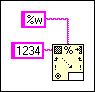

The format string wired to a Format Into File, Format Into String, Scan From File, or Scan From String function contains a format specifier (% code) that LabVIEW does not recognize.
To correct this error, edit the format string wired to the function manually using the format specifiers, or right-click the Format or Scan function and select Edit Scan String from the shortcut menu. The Edit Scan String dialog box appears. Use this dialog box to edit the string.